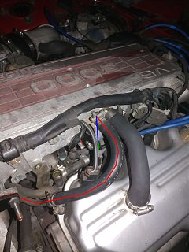
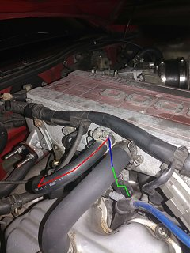
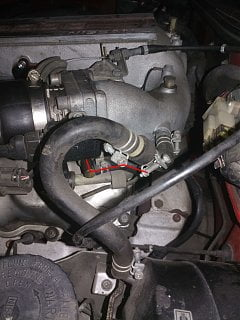
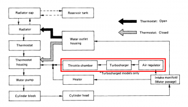

-
Can anybody help me identify this hose? It comes from under the throttle body (picture 3), then behind the engine and to the left side of the plenum (red). It goes through the plenum next to where my AAR would be (blue) and then it goes into one of the runners (green).   -
It's a coolant hose that passes through the TB and a passenger side section of the upper intake plenum. The sensor in the aacv uses that section of plenum to determine coolant temp and adjust accordingly.
Without an AACV there, it is just a coolant pass thru doing nothing. Someone deleted the aacv, installed a block-off plate and left the hoses there.
84 AE/Shiro #683/Shiro #820/84 Turbo -
Thanks! I think I'm going to bypass the throttle body and intake "heating". -
I've looked for examples of people negating the throttle body and AAR cooling, and it seems that they either use a new hose to bypass it all, or they block it off at either end. I'm worried that using a bypass hose would diminish the flow through the heater core, but blocking it off could have cooling consequences that I don't know about. What's the better way to do it? I have a NA engine.Last edited by aoeu; 02-10-2019, 11:51 PM. -
You can jumper the outlet from the lower intake manifold directly to the pipe that feeds into the thermostat housing and still have plenty of flow through the heater core. The bend below the throttle body can be tricky not to kink as the hose inlet faces the passenger side and is pretty close to the exhaust crossover pipe. If you use a section of 3/8id blue silicone coolant hose from NAPA, it will withstand the heat, but kinks kinda easily as it is soft. It's made by Federal hose and is quality stuff.
Silicone hose also needs smooth lined hose clamps though (like whats on the fuel lines) a worm gear type will shred them. 17mm clamp is what works. Also make sure to burp the system well enough that you don't leave air in it.If it makes it's way to the heater core, that will greatly diminish it's effectiveness. Lisle makes an awesome coolant funnel that allows you to run the system open to atmosphere without making a mess and letting any trapped air out.
84 AE/Shiro #683/Shiro #820/84 Turbo

Copyright © 2006–. All rights reserved. Privacy Policy